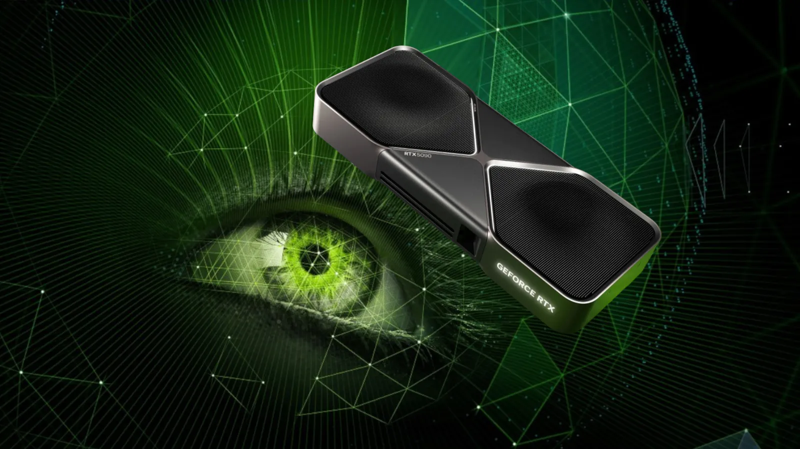
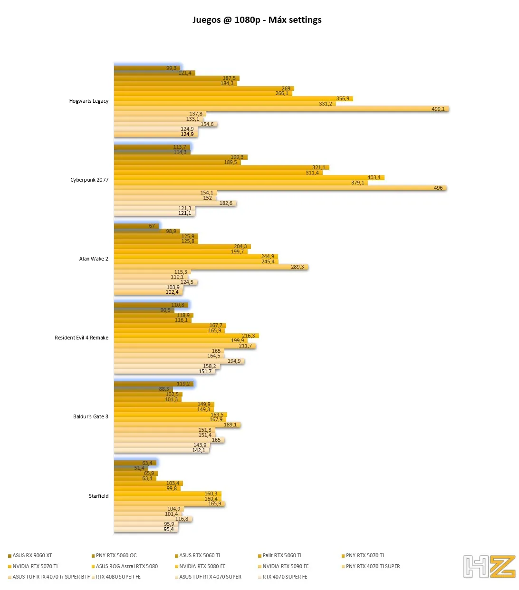

NVIDIA tiene un problema: sus gráficas más caras apenas mejoran a las anteriores

Con cada nueva generación de tarjetas gráficas que se lanza al mercado los usuarios cuentan con que será un cambio que merecerá la pena. Pero las últimas generaciones que hemos visto no han logrado superar las expectativas de muchos usuarios debido a que no ofrecen un rendimiento tan distinto en comparación con los modelos anteriores.
Durante los últimos años hemos visto cómo el hardware de PC ha evolucionado en gran medida, no solo para lograr adaptarse a los juegos que tienen gráficos fotorrealistas, sino también para las nuevas tecnologías como la IA. En estos dos aspectos las tarjetas gráficas han tenido un gran aporte, pero hay ocasiones en las que hemos visto que una nueva generación no ha tenido una gran acogida entre los usuarios. Los fallos que tuvieron en un principio las RTX 50 han hecho que los jugadores pierdan la confianza, pero más allá de esto las críticas también van hacia la diferencia de rendimiento que hay entre estas gráficas y las que vimos en la serie 40.
Las últimas generaciones de NVIDIA no presentan tantas mejoras ¿por qué?
Para conocer específicamente cómo funciona una tarjeta gráfica es necesario compararla en las mismas condiciones que sus competidoras, precisamente esto es lo que nos permite saber si un modelo ha presentado o no la mejora que debería. Si hablamos de los modelos RTX 40 y los RTX 50 sabemos que hay versiones en las que se nota mucho más la diferencia, pero en los modelos de gama alta hay juegos en los que no se representa.

Modelos como la RTX 5080 se mantiene prácticamente a la par en algunos juegos que resultan más exigentes con la RTX 5090, mientras que hay otros en los que destaca mucho (esto depende de la propia optimización del juego). Si ampliamos más la vista a un entorno general en el que se comparan más modelos, entre ellos los de generaciones anteriores, entonces nos damos cuenta de que precisamente algunos modelos de las últimas generaciones no han cambiado demasiado. Precisamente podríamos pensar que las versiones con mayor similitud en términos de rendimiento serían los de gama baja o media, pero un análisis de PC Games Hardware demuestra todo lo contrario.
En el videojuego The Witcher 3 con los gráficos al máximo observamos que la diferencia entre los dos modelos buque insignia de cada generación es de 2 FPS, siendo ambos modelos que cuestan más de 2000€. En estas pruebas nunca se tienen en cuenta los avances en tecnologías como DLSS 4 que implementa la generación de fotogramas múltiples en las RTX 50, precisamente porque son benchmarks que miden la potencia real. Esto es algo que también vemos en el juego Bioshock infinite, mientras que el tercer benchmark realizado sobre b (2013) demuestra una diferencia realmente grande, donde la RTX 5090 ofrece 110 FPS más que la RTX 4090. El punto más interesante de esto lo encontramos en que la diferencia más grande no está en las gráficas de gama alta como bien hemos indicado anteriormente. El cambio que supone pasar de una RTX 4070 a una RTX 5070 es mucho más grande, pasando en The Witcher 3 de 263 a 316 FPS, en BioShock Infinite de 381 a 460 FPS y en Tomb Raider de 433 a 507 FPS, un cambio más consistente que se sitúa en todos los juegos entre 70-80 FPS.